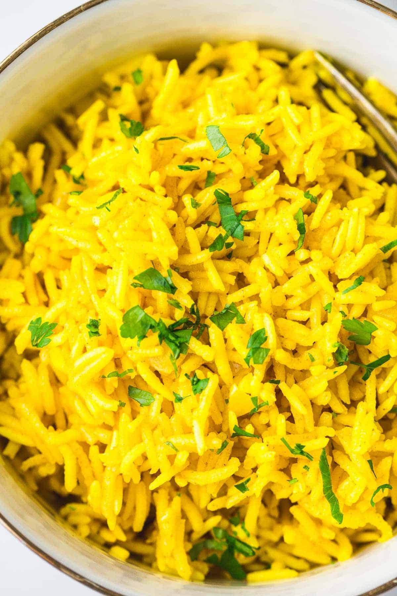

Turmeric Rice

Ingredients
- 1 tablespoon butter
- 1 tablespoon olive oil
- 1/4 cup onion finely diced
- 4 cloves garlic minced
- 1 cup jasmine rice rinsed
- 1 and 1/2 cups chicken broth low sodium
- 1 bay leaf dried
- salt to taste
- pepper to taste
- 1 and 1/2 teaspoon turmeric
Instructions
- Rinse rice until water runs clear, drain.
- In a medium saucepan over medium heat, add olive oil and butter.
- When butter is melted, add onion and garlic, saute until softened.
- Add rice and turmeric. Stir until combined. Add chicken broth and bay leaf, cover pan. Increase heat and bring to a boil.
- Reduce heat, allow to simmer 15-20 minutes, or until liquid is absorbed. Remove from heat and allow to sit for 5 minutes. Remove bay leaf, fluff with a fork and serve.